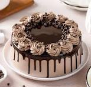

Ingredients
- 1 and 1/2 cups all-purpose flour
- 1 cup sugar
- 1/2 cup unsweetened cocoa powder
- 1 tsp baking soda
- 1/2 tsp salt
- 1 cup milk
- 1/3 cup vegetable oil
- 1 tsp vanilla extract
- 1 tbsp vinegar
Steps
- Preheat oven to 350°F (175°C). Grease a round cake pan.
- In a bowl, whisk together flour, sugar, cocoa, baking soda, and salt.
- Add milk, oil, and vanilla, and mix until smooth.
- Stir in vinegar (the batter will foam slightly).
- Pour into pan and bake for 30–35 minutes.
- Let the cake cool before slicing and serving.